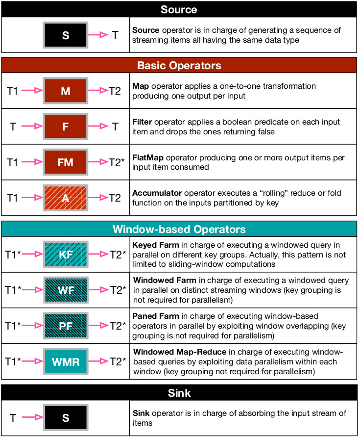
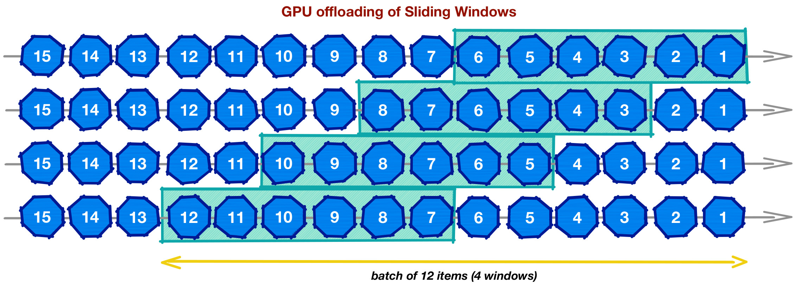

A C++17 Data Stream Processing Parallel Library for Multicores and GPUs
A C++17 Data Stream Processing Parallel Library for Multicores and GPUs
WindFlow provides a quite rich set of common operators, as done in traditional streaming frameworks. The figure below shows the list of operators and a brief description for each of them.

While sources, basic operators and sinks have an immediately clear semantics for programmers a bit expert in open-source stream processing frameworks, windowed operators in WindFlow provide a unique set of programming abstractions [1] to express different kinds of parallelism addressing window-based streaming analytics tasks:
The idea of these parallelism dimensions is sketched in the figure below. For simplicity, we show an example with count-based windows of length of 6 items sliding every 2 items. However, the library also provides support to time-based windows (with event time semantics) instantiated with both non-incremental and incremental queries.

Intra-window parallelism needs additional explanations. The library supports patterns/operators enabling the parallel processing within each window. The first is based on the well-known paned approach [2], where each window is split into tumbling windows called panes with length equal to the GDC between the window length and its slide (in the example, each pane is two items long). The operator computes a partial result per pane (by processing them in parallel if possible), and the panes are aggregated together to produce window results (in the example three pane results are needed per window). A good point of this approach is that pane results shared by consecutive windows do not need to be recomputed by improving the computation performance.
The second approach to intra-window parallelism is based on the map-reduce idea: each window is split into partitions, and a partial result is computed per partition. Then, partition results are aggregated into window-wise results. Although similar to the paned approach, here the size of the partitions depends on the number of parallel replicas involved in the processing of the operator (two in the figure below, right-hand side), leading to the possibility to decrease the processing latency proportionally to the replication degree used the pattern. However, differently from the paned approach, windows are recomputed from scratch although in parallel.

We point out that the existing frameworks fail to provide all these parallelism dimensions in an integrated and easy to use manner. As an example, Apache Storm and Apache Flink provide natively key-based parallelism, while intra-window parallelism is naturally provided in Spark Streaming as a derivation from the Spark engine for batch processing and map-reduce computations.
Window-based patterns have also a GPU implementation in the library (the approach has been described in [3]). The idea is to batch a set of input items corresponding to the data needed to process B>0 consecutive windows of the same substream, where B is a configurable parameter chosen by the user. The library, using CUDA (v10), offloads the processing of each batch on the device where all the windows within a batch are processed in parallel by distinct CUDA threads. This idea is depicted in the figure below.

This approach is applied to all the windowed operators in the library providing a GPU variant for each of them. While in the Keyed Farm and Windowed Farm pattern each CUDA thread is in charge of processing an entire window within a batch, in the Paned Farm and Windowed Map-Reduce patterns the programmer can choose which of the two phases of the computation are going to be offloaded on the GPU: